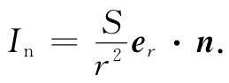

图12-9 面上的照度In 代表单位时间到达单位面积表面上的辐射能
在这一节中，我们将转到一个完全不同的物理问题上去——旨在显示许多不同的可能性，此次，我们将做某种事情，它所导致的积分 与我们在静电学中所求得的积分类型相同（如果我们有一个数学问题会给出某一积分，而它若就是以前解决另一问题的同一积分，那么我们对于该积分的性质便会理解一些）。现在就从照明工程中选取一个例子。假设有一光源放在一平面上距离为a处。该面上的照明情况如何呢？这就是说，单位时间到达单位表面积上的辐射能量有多少（见图12-9）？假定光源是球对称的，以致在任何方向辐射的光都相等。这时，通过垂直 于光流的单位面积的辐射能量与距离的平方成反比。显然，在垂直于光流的表面上，光的强度与点电荷源产生的电场具有相同的公式。若光线与表面的法线成一角度θ投射到表面上，那么In ，即到达单位面积 表面上的能量，就仅有cosθ那么大了，因为同样的能量落在了1/cosθ倍的面积上。如果我们称光源的强度为S，则在一个面上的照度In 便是
 （12.39）
式中，er 是从光源向外的单位矢量；而n则是该面积的单位法线。照度In 相当于从一强度为4π∈0 S的点电荷所产生的电场的法向分量。明白了这一点，我们便可看到，对于任一种光源分布，都能够通过求解对应的静电学问题而获得答案。在计算电荷分布所产生的电场在一平面上的垂直分量时，我们就是按照这种求光源 [3] 对一平面的照度的方法来做的。
试考虑下述例子。为了某种特定实验条件，我们希望使台面上有一个十分均匀的照明。这里，可资利用的是一些沿管的长度辐射均匀的长荧光管。这可以在距台面为z处的天花板上安置一整排荧光管对我们的台子照明。如果我们要求台面照度均匀，比方说在1‰的起伏范围内，则所选用的管与管间的最大间隔b是多少？答案 ：（1）求相隔为b的均匀带电导线栅的电场；（2）计算电场的垂直分量；（3）找出b应多大才能使场的起伏不超过1‰。
在第7章中我们曾见过，带电导线栅的电场可用许多项之和来表示，其中每项给出一个周期为b/n的正弦变化的场，这里n是一整数。任何一项的幅度都由式（7.44）给出：
Fn =An e-2πnz/b .
若要求的场是不太靠近那导线栅处的场，则我们仅需考虑n=1的情况。对于一个完整的解来说，本来还需确定整套系数An ，而这我们还未曾做过（尽管是简单的计算）。既然我们只要求A1 ，就可以估计出它的大小约略与平均场相同。于是该指数因子就会直接提供关于场强变化的相对 幅度。如果希望这个因数等于10-3 ，则将得出b应为0.91z。若令荧光灯管间的间隔等于台面至天花板距离的3/4，则该指数因子为1/4000，而我们便有一个安全系数4，从而相当肯定地会使照明在1‰的范围内保持恒定不变（准确的计算表明，A1 实际上两倍于平均场，因而b≈0.83z）。对于这么一个均匀照明，所容许的管间距离竟会如此之大，多少有点令人惊奇。